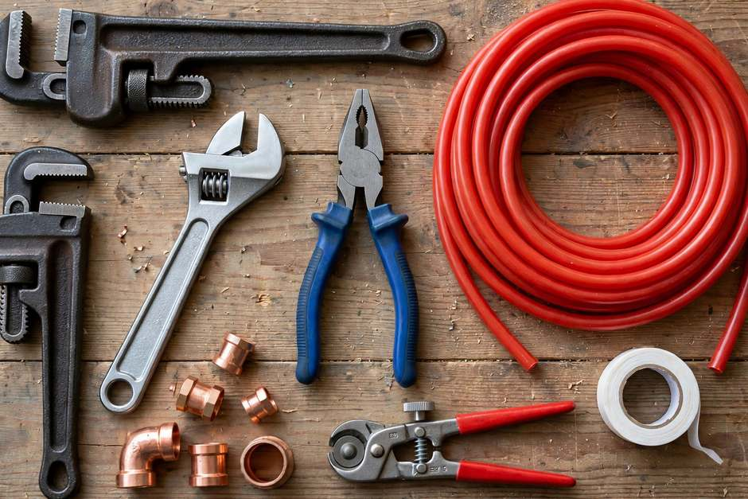
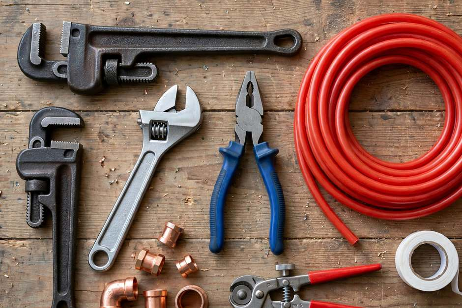
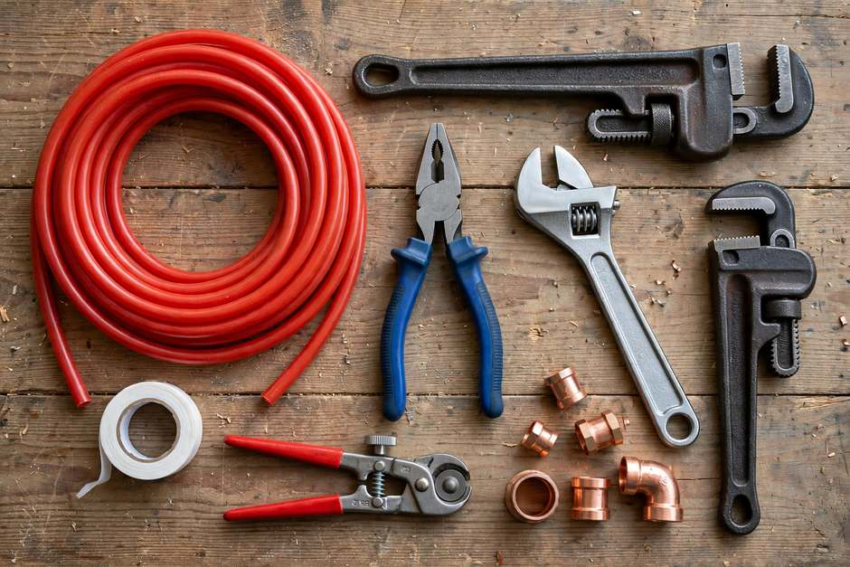
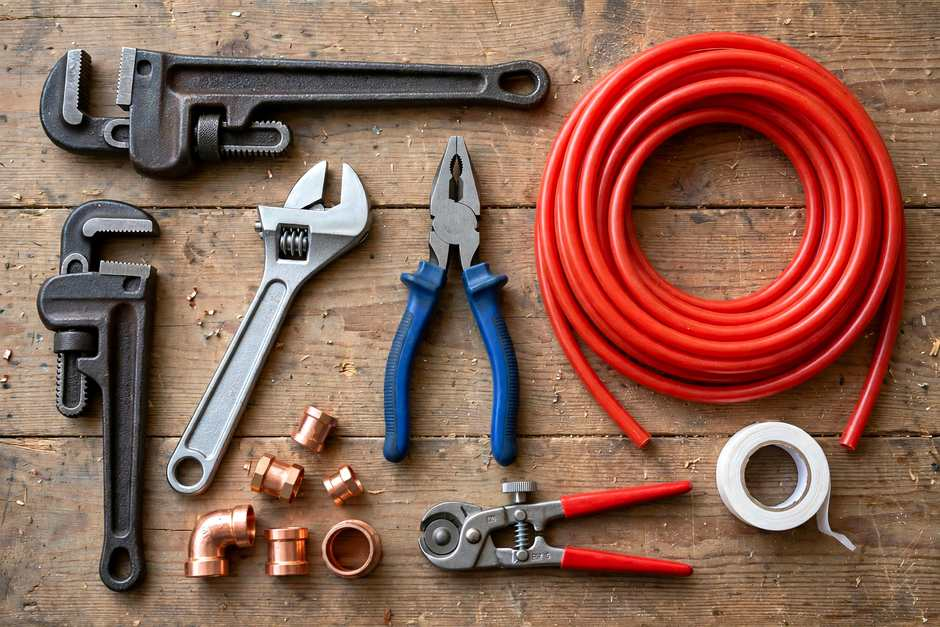

Belleville office1610 W Main St, Belleville, IL 62220
Belleville, Illinois
About Hinkle Plumbing Company
Hinkle Plumbing Company is a plumber based at 1610 W Main St, Belleville, IL 62220, serving Belleville, Illinois. Office hours are Monday through Friday, 8:00 AM to 4:30 PM. Closed Saturday and Sunday. The Google rating is 5.0 from 3 reviews, and this page states verified facts with Belleville housing and infrastructure context from public sources.
Call(618) 677-6556
Google rating5.0 from 3 reviews
Office hoursMonday through Friday, 8:00 AM to 4:30 PM. Closed Saturday and Sunday.
ScopeResidential and commercial plumbing in Belleville, Illinois


Verified Facts
What is verified about this company
This page carries only facts that are verified: the company name, address, phone number, hours, and Google rating, plus public-source context about Belleville housing, water, and sewers. No founding story, team biography, or company history is stated here.
Hinkle Plumbing Company operates from 1610 W Main St, Belleville, IL 62220, and can be reached at (618) 677-6556. The 2020 Census put Belleville's population at 42,404, and American Community Survey 2020–2024 estimates put the median year built at 1962–1963 depending on source, with 71.7% of housing built before 1980. That age profile shapes the work: galvanized, cast-iron, and clay pipe materials appear often, and repiping, sewer repair, and leak detection follow era-typical expectations confirmed per house.
Belleville Context
The local context behind the work
Public sources describe a city with old housing, a mixed sewer system, documented ground movement, and real freeze exposure. The points below carry that context with its sources.

5.0Google rating from 3 reviews
Reviews from Google
What Customers Say on Google
★★★★★
“Very prompt and responsive, the worker was friendly and informative! Will use this company again!”
★★★★★
“Don did an outstanding job for me when I needed him and highly recommend his business”
★★★★★
“Rated 5.0 out of 5 across 3 Google reviews, all five stars.”
Mon–Fri 8:00 AM–4:30 PM
Call Hinkle Plumbing Company
Call (618) 677-6556 Monday through Friday, 8:00 AM to 4:30 PM. Closed Saturday and Sunday. Describe the problem and the building, and the scope factors will be discussed from there.

Contact
Phone, address, and hours
Hinkle Plumbing Company, 1610 W Main St, Belleville, IL 62220. Call (618) 677-6556 Monday through Friday, 8:00 AM to 4:30 PM. Closed Saturday and Sunday. Contact is by phone; this site has no contact form.